Numerical analysis notes
Fixed point methods
Definition
From an approximation attempt based on the split of the matrix.
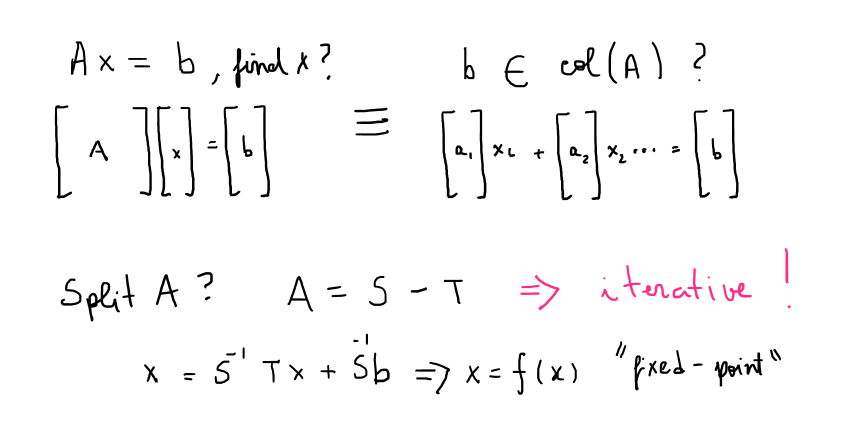General implementation
Relation between fixed-point iteration and preconditioning.
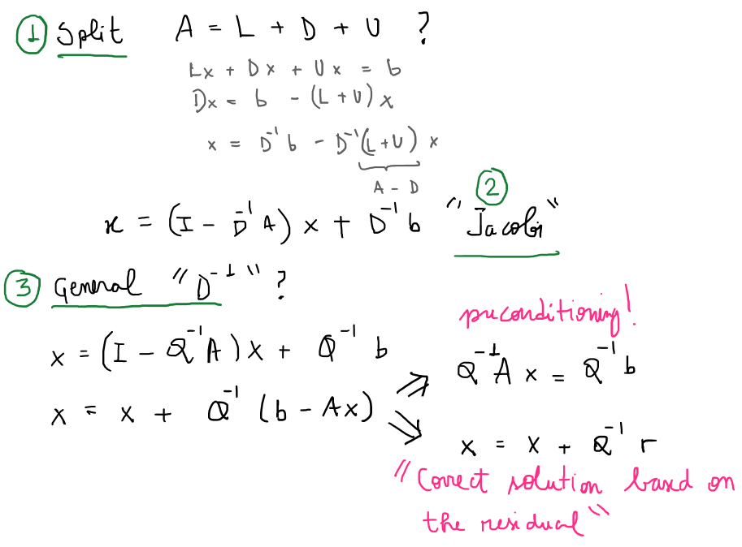import numpy as np
def smoother(A, b, x, Q, n=100, tol=1e-12):
residual, residuals, iter_counter, I = 1, [], 0, np.identity(A.shape[0])
while residual > tol:
x = (I - Q @ A) @ x + Q @ b
iter_counter += 1
if iter_counter == n:
break
residual = np.linalg.norm(b - A @ x)
residuals.append(residual)
return x, iter_counter, residualsJacobi
import matplotlib.pyplot as plt
import matplotlib
matplotlib.style.use('ggplot')
A = np.array([[9, 2], [3, 5]])
b = A[:, 0]
x = b * 0
print(f'A={A}')
print(f'b={b}')
print(f'Exact sol: {np.linalg.solve(A, b)}')
print(f'Exact sol: {np.linalg.solve(A, b)}')
Q = np.diagflat(np.diag(A)) #
print(f'Q^-1={Q}')
x, i, r = smoother(A, b, x, np.linalg.inv(Q), tol=1e-8)
print(f'Iter sol: {x} in {i} iterations')
plt.plot(r);plt.xlabel('iteration');plt.ylabel('residual norm')A=[[9 2] [3 5]] b=[9 3] Exact sol: [1. 0.] Exact sol: [1. 0.] Q^-1=[[9 0] [0 5]] Iter sol: [1.00000000e+00 1.06546361e-09] in 21 iterations
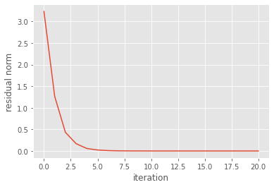
Gauss Seidel
import matplotlib.pyplot as plt
import matplotlib
matplotlib.style.use('ggplot')
A = np.array([[9, 2], [3, 5]])
b = A[:, 0]
x = b * 0
print(f'A={A}')
print(f'b={b}')
print(f'Exact sol: {np.linalg.solve(A, b)}')
Q = (np.diagflat(np.diag(A)) - np.tril(A, -1)) #
print(f'Q^-1={Q}')
x, i, r = smoother(A, b, x, np.linalg.inv(Q), tol=1e-8)
print(f'Iter sol: {x} in {i} iterations')
plt.plot(r);plt.xlabel('iteration');plt.ylabel('residual norm')A=[[9 2] [3 5]] b=[9 3] Exact sol: [1. 0.] Q^-1=[[ 9 0] [-3 5]] Iter sol: [1.00000000e+00 1.11835052e-09] in 39 iterations
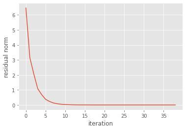
QR decomposition
Definition
Goal is to find the decomposition of $A=QR$. Where $Q$ is a orthonormal basis for $A$ and $R$ is a triangular matrix with the "orthogonalization" components.
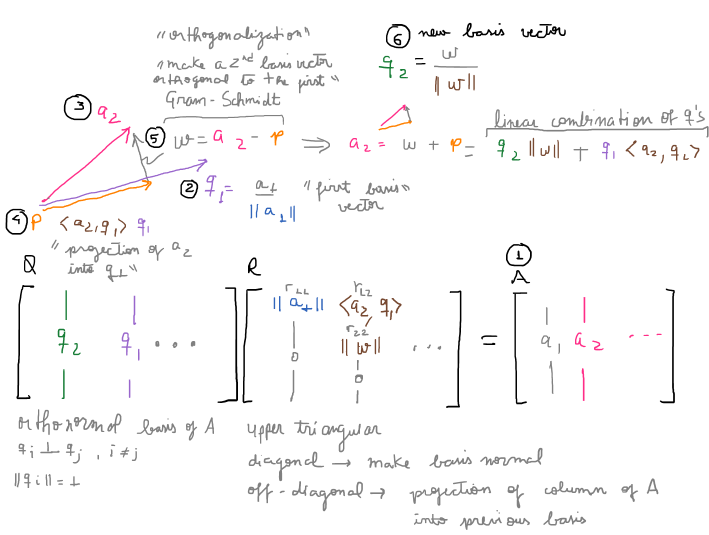Implementation
from typing import Union
import numpy as np
np.set_printoptions(2)
def qr(A: np.ndarray) -> Union[np.ndarray, np.ndarray]:
"""Performs A=QR decomposition on A square."""
n, _ = A.shape
R, Q = np.zeros((n, n)), np.zeros((n, n))
for i in range(n): # for each column (0, n)
R[i, i] = np.linalg.norm(A[:, i]) # diagonal entries of R matrix
Q[:, i] = A[:, i] / R[i, i] # first basis vector
for j in range(i, n): # upper triangular
R[i, j] = Q[:, i] @ A[:, j] # non-diagonal entries
A[:, j] = A[:, j] - R[i, j] * Q[:, i] # remove non orthogonal part (Gram-Schimidt)
return Q, RSimple example
import matplotlib.pyplot as plt
A = np.array([[12, -51, 4], [6, 167, -68], [-4, 24, -41]])
npq, npr = np.linalg.qr(A)
Q, R = qr(A)
print(f'Q=\n {Q} \n R=\n{R}')
print(f'numpy: \n Q=\n{npq} \n R=\n{npr}')
plt.imshow(R)Q= [[ 0.86 -0.39 -0.32] [ 0.43 0.9 0.03] [-0.29 0.17 -0.95]] R= [[ 14. 21. -14. ] [ 0. 175. -70. ] [ 0. 0. 34.8]] numpy: Q= [[-0.86 0.39 0.33] [-0.43 -0.9 -0.03] [ 0.29 -0.17 0.94]] R= [[ -14. -21. 14.] [ 0. -175. 70.] [ 0. 0. -35.]]
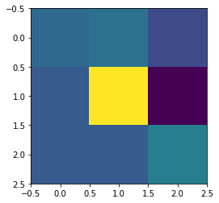
QR and symmetric matrices
import matplotlib.pyplot as plt
import matplotlib
matplotlib.style.use('ggplot')
size = 10
np.random.seed(2)
A = np.random.random((size, size))
As= A.T @ A
Q, R = qr(As)
fig, (ax1, ax2) = plt.subplots(1, 2)
ax1.imshow(R)
ax1.set_title('Symm')
Q, R = qr(A)
ax2.imshow(R)
ax2.set_title('Non Symm')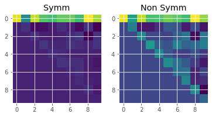
Remarks:
-
the triangular matrix has large value at the top.
-
the orthogonalization process has lower recurrence, we only need to subtract the from the basis candidate the projection of a few other basis.
Backward and forward substitution
def backward_subs(U: np.ndarray, c: np.ndarray) -> np.ndarray:
"""Compute x from Ux=c, with U upper triangular."""
m, n = U.shape
x = np.zeros(m)
# from last m to first 0, -1 to convert position to index
for i in range(m-1, -1, -1):
x[i] = (c[i] - U[i, i + 1:] @ x[i + 1:]) / U[i, i]
return x
def forward_subs(L: np.ndarray, b: np.ndarray) -> np.ndarray:
"""Compute c from Lc=b, with L lower triangular."""
m, n = L.shape
c = np.zeros(m)
for i in range(m):
c[i] = b[i] - L[i, :i] @ c[:i] / L[i, i]
return c
np.random.seed(1)
A = np.random.random((3, 3))
from scipy.linalg import lu
L, U = lu(A, permute_l=True)
b = A[:, 0]
c = forward_subs(L, b)
x = backward_subs(U, c)
print(x)
print(np.linalg.solve(A, b))[ 1. -0. 0.] [ 1. -0. 0.]
Arnoldi iterations
Definition
The Arnoldi iteration uses the same Gram-Schimit idea in the QR. But it extends the But now we want to find $AQ_n = Q_{n+1} \tilde{H}_n$. For $A$ a square $m \timex m$ matrix. This is a reduction of a matrix to a Hessenberg form. The algorithm goes is performed column by column and can be stopped whenever.
We can understand it as generating basis vectors for a Krylov subspace defined by a general vector $b$ and a matrix $A$.
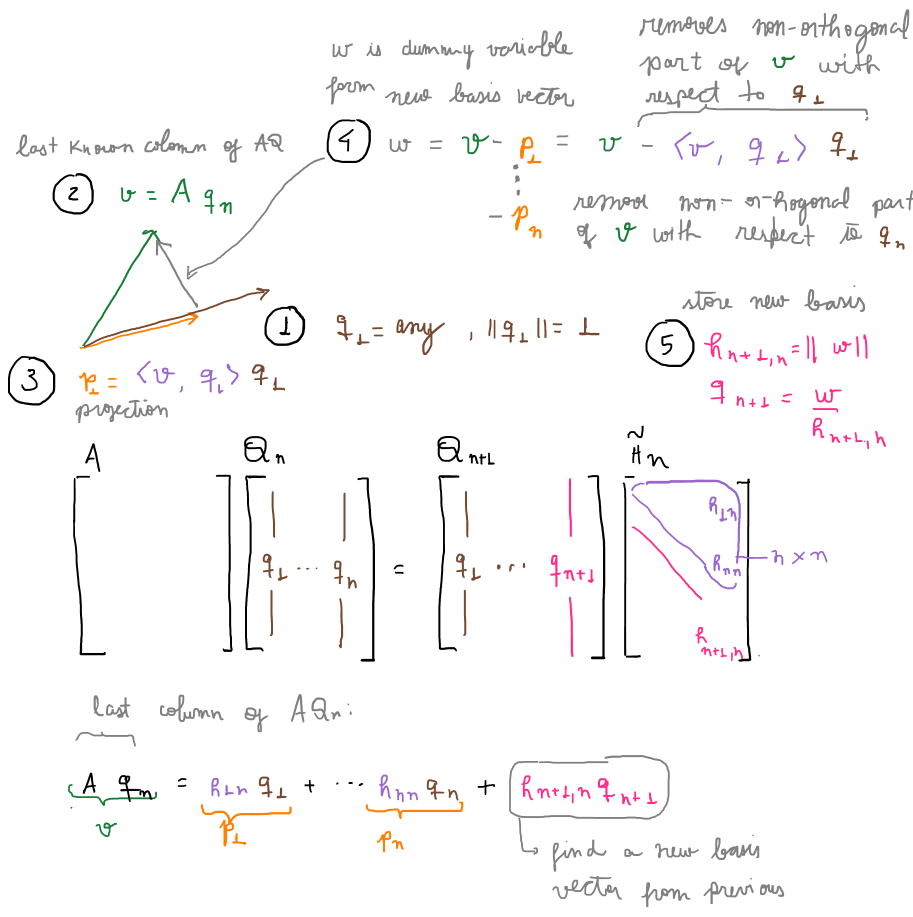Implementation
import numpy as np
from typing import Union
np.set_printoptions(2, suppress=True)
def arnoldi(A: np.ndarray,
b: np.ndarray,
n_max: int) -> Union[np.ndarray, np.ndarray]:
"""Arnoldi iteration AQ_n = Q_n+1 H_n.
Args:
A: (m x m) square matrix.
b: (m) vector.
n_max: number of basis.
Returns:
H: (n_max + 1, n_max) Hessenberg matrix.
Q: (m, n_max + 1) matrix with orthogonal basis.
"""
m = A.shape[0]
H = np.zeros((n_max + 1, n_max))
Q = np.zeros((m, n_max + 1))
Q[:, 0] = b / np.linalg.norm(b) # (1) first basis vector
for n in range(n_max): # loop over each basis vector
v = A @ Q[:, n] # (2) basis candidate
for j in range(n + 1): # loop over all previous basis
H[j, n] = Q[:, j] @ v # (3) inner product for projection
v = v - H[j, n] * Q[:, j] # (4) ortogonalization
H[n + 1, n] = np.linalg.norm(v) # (5)
if H[n + 1, n] < 1e-12: # arnoldi breakdown
return H, Q # return e exit function
Q[:, n + 1] = v / H[n + 1, n] # (5)
return H, QExample
np.random.seed(2)
n = 2
A = np.random.random((n, n))
b = np.zeros(A.shape[0]); b[0] = 1
H, Q = arnoldi(A, b, n_max=n)
print(f'H: \n {H}')
print(f'Q: \n {Q}')
print(f'AQ_n = Q_n+1 H_n?')
print(f'AQ_n =\n{A @ Q[:, :n]}')
print(f'Q_n+1 H_n=\n{Q @ H}')H: [[0.44 0.03] [0.55 0.44] [0. 0. ]] Q: [[1. 0. 0.] [0. 1. 0.]] AQ_n = Q_n+1 H_n? AQ_n = [[0.44 0.03] [0.55 0.44]] Q_n+1 H_n= [[0.44 0.03] [0.55 0.44]]
Symmetric matrices
import matplotlib.pyplot as plt
np.random.seed(2)
fig, (ax1, ax2) = plt.subplots(1, 2)
n = 15
A = np.random.random((n, n))
b = np.zeros(A.shape[0]); b[0] = 1
As = A.T @ A
H, Q = arnoldi(As, b, n_max=n)
ax1.imshow(H)
ax1.set_title('Symm')
H, Q = arnoldi(A, b, n_max=n)
ax2.imshow(H)
ax2.set_title('Non Symm')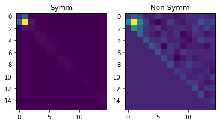
Remarks:
-
symmetric matrices implies in lower recurrence since it yields a tridiagonal $H$.
-
it can optimize the algorithm by not requiring looping over all previous basis, just the immediate previous.
-
tridiagonal because $H$ is Hessenberg and will be symmetric as well.
-
Relation with Kyrlov subspaces
From Strang class. Lecture 18: Krylov Methods / Multigrid Continued | Video Lectures | Mathemati…
n = 6
krylov_dimension = 6
A = np.diagflat(np.arange(1, n+1))
b = np.ones(n)
K = np.empty((n, krylov_dimension))
K[:, 0] = b
for k in range(1, krylov_dimension):
K[:, k] = A**k @ b
print('cond(K): ', np.linalg.cond(K))
H, Q = arnoldi(K, b, n_max=n)
print('cond(Q): ', np.linalg.cond(Q))
fig, ax = plt.subplots()
ax.imshow(H)cond(K): 731200.938786102 cond(Q): 1.4142135623733276
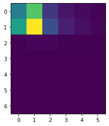
Remarks:
-
condition number of the Krylov matrix is very high.
-
close to singular, columns almost linearly dependent.
-
look at $K^T K$, which is symmetric with positive eigenvalues
-
the Gram matrix measures how independent are the columns vectors.
-
-
this matrix's eigenvalues are related to the square of the singular values of $K$
-
-
condition number of the orthonormal basis of the Krylov subspace is much smaller.
-
column space vectors are independent
-
-
the matrix $H$ is concentrated at the top, indicating low recurrence and efficiency of the algorithm.
-
because less subtractions are required.
-
Least squares
Definition
Find an approximation for an overdetermined $Ax=b$ that minimizes the residual norm.
The problem is that $Ax=b$ has no solution, which means that we can not express $b$ as a linear combination of the columns of $A$. Then, what we do? We project $b$ onto $A$ and solve that instead.

Implementation
def least_square(A: np.ndarray, b: np.ndarray) -> np.ndarray:
"""Approximate x for Ax=b
Returns:
x: (n) n is the number of columns of A.
"""
Q, R = qr(A.T @ A)
x = backward_subs(R, Q.T @ A.T @ b)
return x
A = np.array([[1, -2], [1, 0], [1, 2]])
b = np.array([1, 2, 4])
x = least_square(A, b)
print(x)
npx, _, _, _ = np.linalg.lstsq(A, b, rcond=None)
print(npx)[2.33 0.75] [2.33 0.75]
Visualization
fig, ax = plt.subplots()
A = np.array([[0, 6], [1, 0], [2, 0]])
b = np.array([1, 2, 4])
x = least_square(A, b)
ax.scatter(*A.T)
domain = np.linspace(0, 2)
print('Least square solution for Ax=b: ', x)
ax.plot(domain, domain*x[1] + x[0])Least square solution for Ax=b: [2. 0.17]
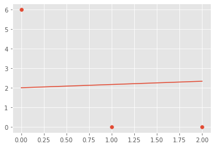
Krylov subspace methods
Relation with fixed-point iterations
Definition
Krylov subspace methods are iterative methods that use the Krylov subspace. The solution approximation is in the Krylov subspace, which is cheap to construct, just requires matrix vector multiplication. Specially cheap if we are dealing with sparse matrices.
The Krylov space by construction has bad condition number.
Arnoldi algorithm, for instance, solves that by generating a orthonormal basis for it.
Projection onto Krylov subspaces
GMRES
In order to find the linear combination of the Krylov column vectors we impose that the residual at each step is minimum.
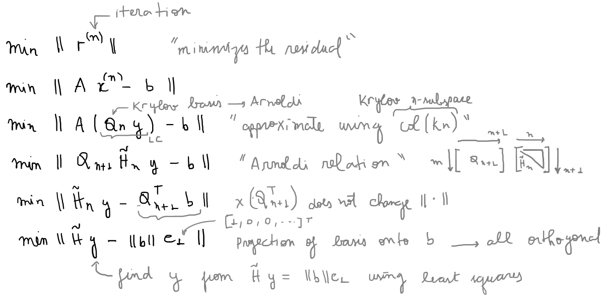GMRES and least squares
This minimization constraint, minimum residual, is solved using the least square method.
GMRES and Arnoldi
GMRES uses Arnoldi to simplify the minimization problem.
Implementation
def gmres(A: np.ndarray,
b: np.ndarray,
max_iter: int = 200,
tol: float = 1e-8) -> np.ndarray:
"""Solve Ax=b using GMRES."""
m = A.shape[0]
x = np.zeros(m)
num_iter = 0
residuals = []
for n in range(max_iter):
H, Q = arnoldi(A, b, n)
rhs = np.zeros(n+1); rhs[0] = np.linalg.norm(b)
y = least_square(H, rhs)
x = Q[:, :n] @ y
r = np.linalg.norm(H @ y - rhs)
residuals.append(r)
if r < tol:
break
num_iter += 1
return x, num_iter, residualsExample
np.random.seed(2)
size = 5
A = np.random.random((size,size))
print('A=\n', A)
b = np.random.random(size)
print('b=\n', b)
print('Numpy: ', np.linalg.solve(A, b))
x, num_iter, _ = gmres(A, b)
print("GMRES: ", x, "num_iter: ", num_iter)A= [[0.44 0.03 0.55 0.44 0.42] [0.33 0.2 0.62 0.3 0.27] [0.62 0.53 0.13 0.51 0.18] [0.79 0.85 0.49 0.85 0.08] [0.51 0.07 0.43 0.1 0.13]] b= [0.6 0.23 0.11 0.22 0.35] Numpy: [ 0.62 -1.42 0.21 1.04 -0.49] GMRES: [ 0.62 -1.42 0.21 1.04 -0.49] num_iter: 5
Analysis of residual
import matplotlib.pyplot as plt
import matplotlib
matplotlib.style.use('ggplot')
np.random.seed(2)
size = 20
A = np.random.random((size,size))
b = np.random.random(size)
%timeit x, num_iter, r = gmres(A, b)
plt.plot(r);plt.xlabel('iteration');plt.ylabel('residual norm')18 ms ± 517 µs per loop (mean ± std. dev. of 7 runs, 100 loops each)
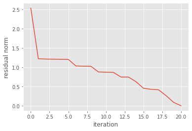
Multigrid methods
Setup phase
In this phase we need to construct the operators for each level.
Diagonal dominance and convergence of fixed-point methods
Prologue
Fixed point methods are also refereed as relaxation methods due their historical application to problems models with "div (grad)" operator, or Laplacian.
Derivation Jacobi
Diagonal dominant matrix
import numpy as np
def jacobi(A, b, x, n=100, tol=1e-12):
D = np.diag(A) # just a 1d array
R = A - np.diagflat(D) # diagflat matrix with diagonal
error = 1
i = 0
e = []
while error > tol:
x = (b - R @ x) / D
i += 1
if i == n: break
error = np.linalg.norm(b - A @ x)
e.append(error)
return x, i, eimport matplotlib.pyplot as plt
import matplotlib
matplotlib.style.use('ggplot')
A = np.array([[9, 2], [3, 5]])
b = A[:, 0]
x = b * 0
print(A, b)
print(f'Exact sol: {np.linalg.solve(A, b)}')
x, i, e = jacobi(A, b, x)
print(f'Iter sol: {x} in {i} iterations')
print(f'Condition number {np.linalg.cond(A)}')
print(f'Eigenvalues {np.linalg.eigvals(A)}')
plt.plot(e);plt.xlabel('iteration');plt.ylabel('residual norm')[[9 2] [3 5]] [9 3] Exact sol: [1. 0.] Iter sol: [1. 0.] in 30 iterations Condition number 2.677847838291863 Eigenvalues [10.16227766 3.83772234]
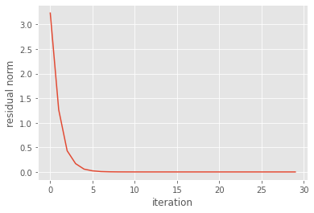
Remarks:
-
$A$ is diagonally dominant because the diagonal element is greater than the sum of the off diagonal elements.
-
convergence in 30 iterations.
-
small condition number.
Non diagonal dominant
A = np.array([[9, 100], [2, 5]])
b = A[:, 0]
x = b * 0
print(A, b)
print(f'Exact sol: {np.linalg.solve(A, b)}')
x, i, e = jacobi(A, b, x)
print(f'Iter sol: {x} in {i} iterations')
print(f'Condition number {np.linalg.cond(A)}')
print(f'Eigenvalues {np.linalg.eigvals(A)}')
plt.plot(e);plt.xlabel('iteration');plt.ylabel('residual norm')[[ 9 100] [ 2 5]] [9 2] Exact sol: [ 1. -0.] Iter sol: [-2.45965443e+32 0.00000000e+00] in 100 iterations Condition number 65.21047149118199 Eigenvalues [21.28285686 -7.28285686]
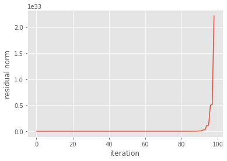
Remarks:
-
residual exploded and solution did not converged.
-
high condition number.
-
eigenvalues spread apart in a wider range.